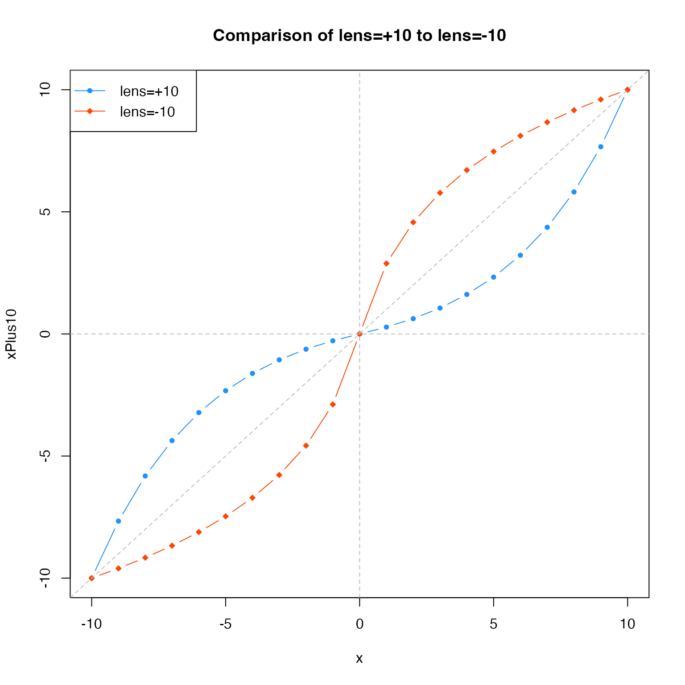

Warp a vector of numeric values relative to zero
warpAroundZero(x, lens = 5, baseline = 0, xCeiling = NULL, ...)
Arguments
| x | numeric vector |
|---|---|
| lens | numeric value which defines the lens factor,
where |
| baseline | numeric value describing the baseline, for example
when the central value is non-zero. The baseline is subtracted
from |
| xCeiling | numeric maximum value used for the color warp range,
useful for consistency. When |
Details
This function warps numeric values using a log curve transformation, such that values are either more compressed near zero, or more compressed near the maximum values. For example, a vector of integers from -10 to 10 would be warped so the intervals near zero were smaller than 1, and intervals farthest from zero are greater than 1.
The main driver for this function was the desire to compress divergent color scales used in heatmaps, in order to enhance smaller magnitude numeric values. Existing color ramps map the color gradient in a linear manner relative to the numeric range, which can cause extreme values to dominate the color scale. Further, a linear application of colors is not always appropriate.
See also
Other jam numeric functions: deg2rad,
noiseFloor, normScale,
rad2deg, rowGroupMeans,
rowRmMadOutliers
Examples
x <- c(-10:10); xPlus10 <- warpAroundZero(x, lens=10); xMinus10 <- warpAroundZero(x, lens=-10); plot(x=x, y=xPlus10, type="b", pch=20, col="dodgerblue", main="Comparison of lens=+10 to lens=-10");legend("topleft", legend=c("lens=+10", "lens=-10"), col=c("dodgerblue","orangered"), pch=c(20,18), lty="solid", bg="white");# example showing the effect of a baseline=5 xPlus10b5 <- warpAroundZero(x, lens=10, baseline=5); xMinus10b5 <- warpAroundZero(x, lens=-10, baseline=5); plot(x=x, y=xPlus10b5, type="b", pch=20, col="dodgerblue", main="Comparison of lens=+10 to lens=-10", ylim=c(-10,15), sub="baseline=+5");legend("topleft", legend=c("lens=+10", "lens=-10"), col=c("dodgerblue","orangered"), pch=c(20,18), lty="solid", bg="white");